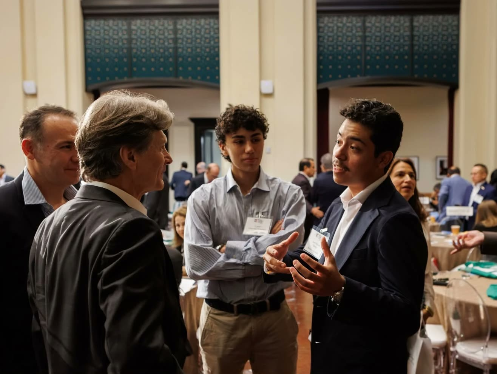
Nonprofit Founder | Electrical & Computer Engineering @ Rice ’30
Building sustainable systems that change the world.
I'm an Electrical and Computer Engineering student and QuestBridge Scholar at Rice University, specializing in photonics, electronics, and nano-devices. As founder of the UNbound Youth Initiative, I work alongside an Oculus VR co-founder and a U.S. Political Advisor to the UN Security Council to build a six-month global curriculum that spans 13 countries and serves 1,000+ marginalized community members. In 2027, I'll keynote two international service-education conferences. My goal is a career engineering the hardware and systems that make advanced technology sustainable and accessible to the communities that need it most.
Skills
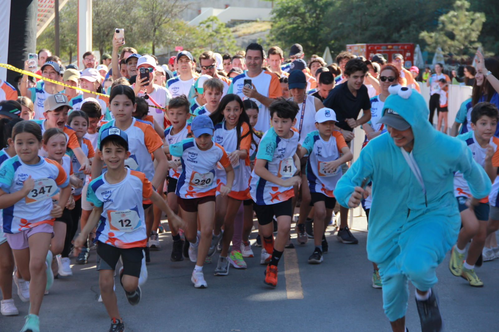
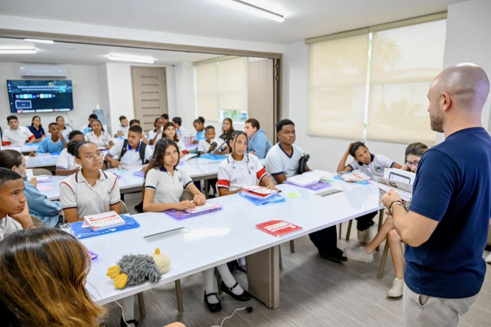
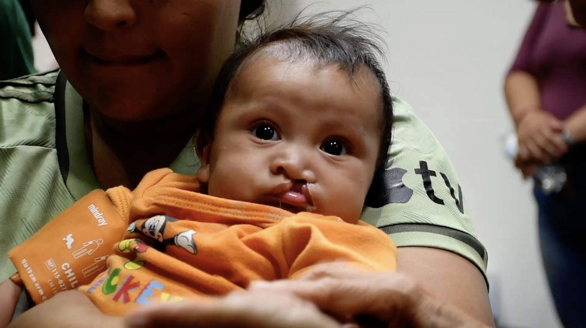
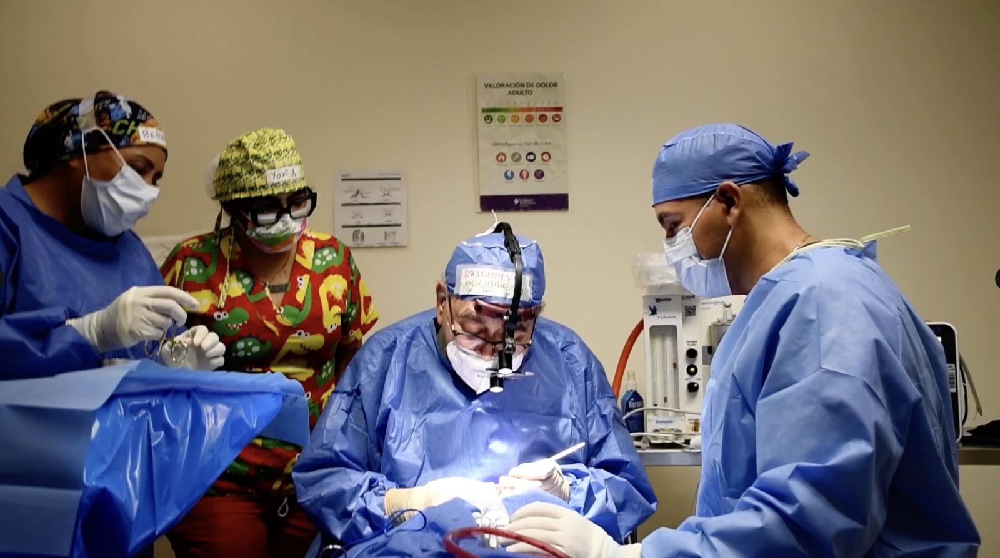
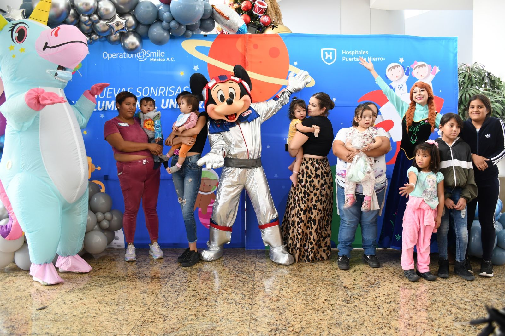
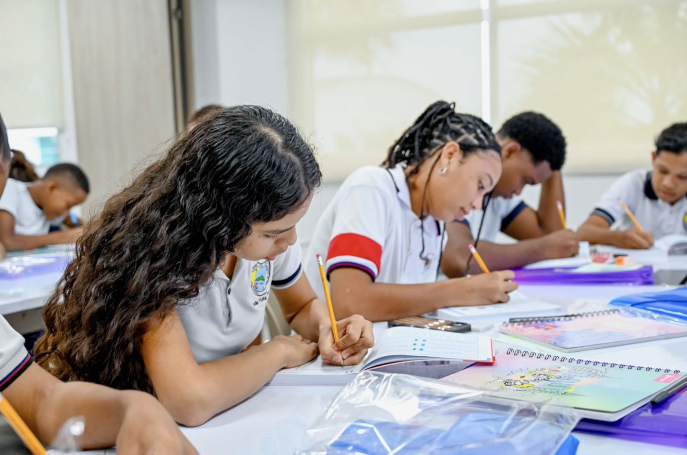
Founder & Chairman · Est. March 2025
Leadership unbound by borders.
The UNbound Youth Initiative is a global student-led leadership network that connects English-speaking schools around the world to equip students with the tools, guidance, and global lens to lead community-based service initiatives—sparking lasting impact that begins in schools and ripples outward.
By the numbers
Why I started it
For the past two years, I've had the incredible opportunity of volunteering for Operation Smile during their medical missions in Monterrey, Mexico—translating between surgeons and nurses and playing with child patients before life-changing cleft palate surgeries.
As ASFM OpSmile Liaison, still in high school, I was given the chance to make an actual difference. This experience convinced me: young people like myself can change the world. That's exactly why, in March of 2025, I founded the UNbound Youth Initiative... and why, only a few months later, my team and I united schools across the globe around this shared belief.
EDES 120/220 · Camp For All
Parity Aim.
An adaptive stand and trigger so campers with limited hand or arm function can play paintball on their own.
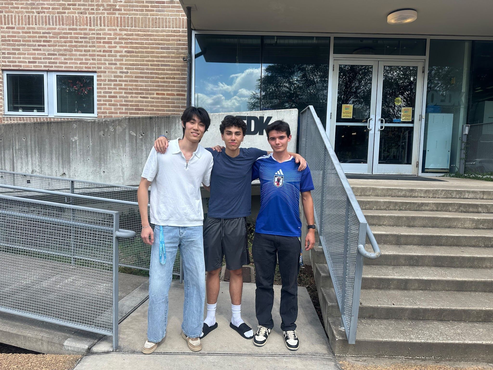
Mission
Improve access to paintball for Camp For All campers with limited hand or arm function, so they can play more independently.
Stage 02 · Design Analysis
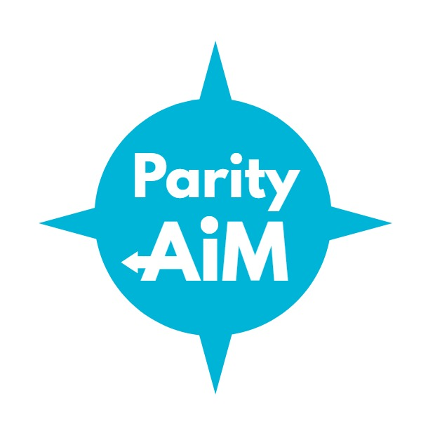
Parity Aim
Mission statement
Our goal is to improve access to paintball target shooting for Camp For All campers with limited hand or arm function, allowing them to participate more independently in the activity.
The problem
At the paintball range, some campers with limited hand strength, dexterity, finger movement, or arm mobility can aim and know when they want to fire, but cannot stabilize the marker or generate the force needed to pull a traditional trigger. There is no dedicated accommodation: the range only has a table to rest the marker on. As a result, some campers need extra help or cannot take part as independently as others.
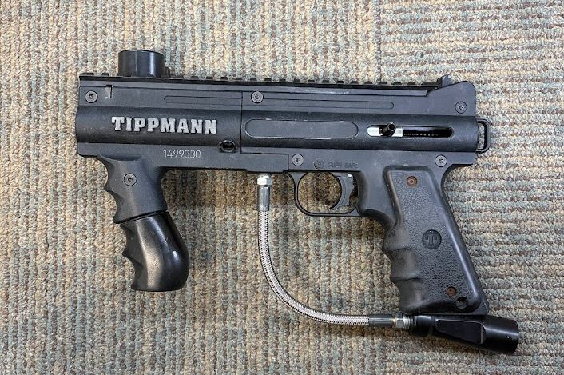
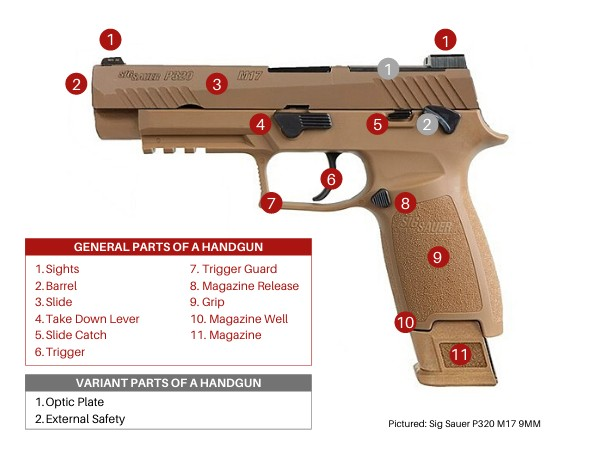
Key learnings from research
The HQ100 is the only product that meets all of the client's functional needs: chin, mouth, sip, bite or button control, recoil absorption, and a self-stabilizing base. However, it costs nearly $3,000 and has more features than the camp needs.
Solenoid push-button actuators and sip-and-puff switches fire without a finger pull. Motorized pan-and-tilt mounts let players aim with a joystick or head array. Each is too costly or too narrow for every camper.
Even within one diagnosis, function varies widely. Cerebral palsy's MACS scale runs from Level I (handles objects easily) to Level V (cannot handle objects). We must design for the motion a camper can reliably make.
Commercial adaptive switches activate at about 10 g, 70 g, 100 g, and 156 g. Low-force interfaces can serve very different abilities.
Texas youth-camp rules treat paintball guns as pellet guns that need supervision and secure storage. ASTM F2272 requires markers not to discharge from jolts, and F1776 covers eye and face protection.
Stakeholders
| Type | Stakeholder | Involvement | How the problem affects them |
|---|---|---|---|
| Primary | Campers with limited upper-body strength and hand dexterity | Use the device at the paintball range | Unable to use the paintball gun, are told they can't, and feel left out because of their disability |
| Secondary | Camp operators | Supervise the range; set up, clean, and maintain the device | The camp's goal is accessibility, and they want every camper to be able to use the paintball guns |
| Secondary | Other campers | Share the range and activity groups | See their friends left out of the activity |
| Tertiary | Owners | Influence adoption of the solution | Camp usability matters to them; the camp promises everyone can participate in everything |
| Tertiary | Parents and caretakers | Influence adoption of the solution | Want their kids to be included |
Desired features & functions
- Detaches from the paintball marker and is modular
- Lets campers fire with limited or no physical force, including campers with no hands or limbs
- Stands and stabilizes on its own, holding the marker's weight
- Lets campers aim and rotate the marker
- Preserves the marker's existing safety features and prevents unintended firing
- Is easy for staff to clean, adjust, and maintain
- Contains no latex, since some campers are allergic
- Uses Camp For All's purple and green where possible (requested as nice to have but nonessential)
Design criteria
| Type | Criterion | Target value | Justification |
|---|---|---|---|
| Constraint | Safe | All NXL guidelines | The product fails if it isn't safe. Safety is always the first priority. |
| Constraint | Stable | ≥ 100 N on full device | Without this, the device can't do its basic job of holding the marker. |
| Constraint | Sturdy | ≥ 10 N on trigger | Below this, the trigger mechanism simply breaks. |
| Objective | Easy to use | UDS Level ≥ 4 | A spectrum, not a pass/fail. A hard-to-use device still works, but serves campers less well. |
| Objective | Enduring | ≥ 10,400 uses | The device could survive fewer uses and still work. |
| Objective | Economical | ≤ $40 per unit | Cost doesn't decide whether the problem is solved, but the camp is a nonprofit. Later discarded after instructor feedback. |
| Objective | Easy to maintain | < 20 s to disassemble | Detaching quickly matters to staff but isn't required for function. |
UDS (user-defined scale) for ease of use: 1 = needs continuous help · 3 = needs some help but fires independently · 4 = only minor staff setup · 5 = fully independent.
Why the criteria matter
We developed seven criteria, three constraints and four objectives, from our client interview, research, and the problems campers face at the range. Safety and stability are constraints because a device that can't safely hold the paintball gun fails outright. The objectives, by contrast, allow us to measure the success of our device without deciding whether it fundamentally works.
We ranked ease of use first, because the point of the project is camper independence. A durable, cheap device that still needs constant staff help wouldn't solve the problem. Durability is second, since many campers may use the solution many times on any given day. Cost was initially placed third, though we ultimately discarded the criterion on the basis of Rice University lecturer Dr. Heather Bisesti's feedback. Maintenance is last because it affects staff more than campers, and our client explicitly stated that maintenance was not a large concern given the organization's large staff. These rankings and the design criteria they encompass guide concept selection toward the designs that most improve independence and long-term reliability.
Stage 03 · EDP 4–6
Design Solution
From 77 partial ideas to one selected concept, then a detailed design ready to prototype.
EDP 4 · Brainstorming
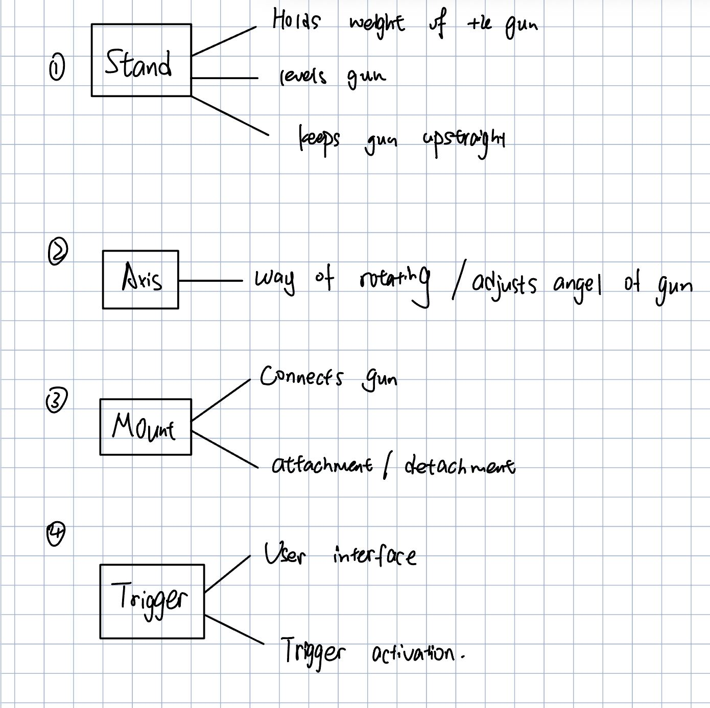
- StandHolds the marker's weight and keeps it level
- MountAttaches directly to the marker
- AxisRotates the marker so the camper can aim
- Trigger interfaceHow the camper signals "fire"
- Trigger activatorPhysically pulls the trigger
Round 1 aimed for volume using the slip method. Round 2 went deeper into how each mechanism would actually work. Every idea solved only one block, so none were complete devices. Camera tripods and the existing products from our research inspired many of them.
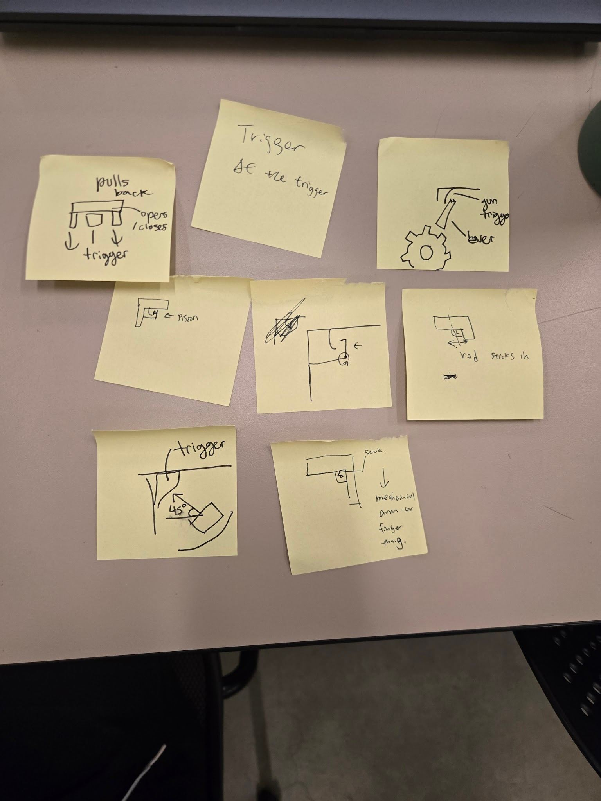
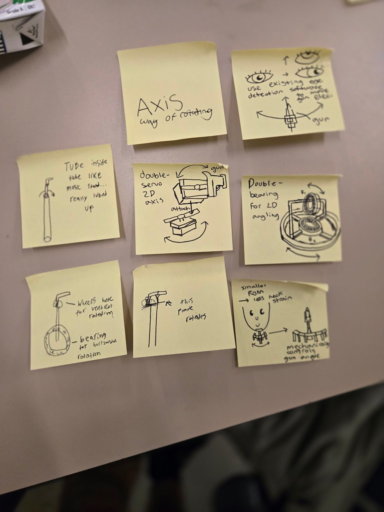
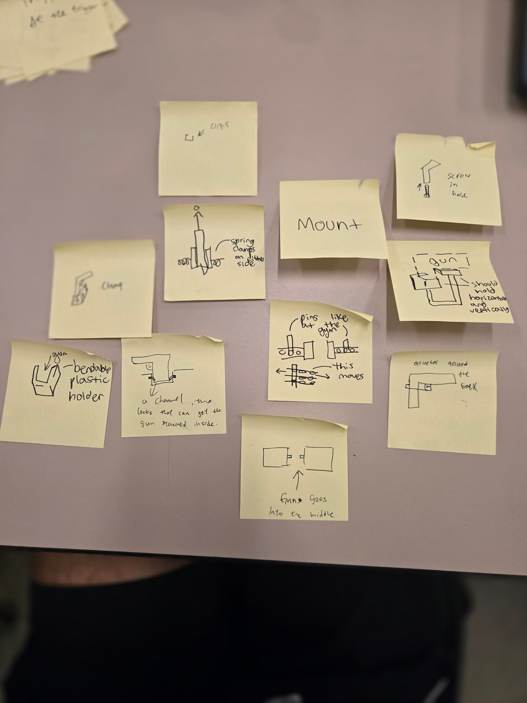
EDP 5 · Evaluating
Screening compared each idea to a datum (+ / 0 / −) on all six criteria. We screened partial ideas within each block, combined the 17 survivors in a morph chart, then screened the 30 complete ideas. Scoring rated the final 10 from 1 to 5 using measurable proxies, weighted by our objective ranking. Constraints weren't scored because every design must meet them.
- Mount11 → 3 · best: Y-stand (+4)
- Trigger12 → 2 · best: spring + rod (+5)
- Trigger interface16 → 4 · best: elephant method (+5)
- Stand16 → 3 · best: Y-stand (+1)
- Axis22 → 5 · best: tripod (+6)
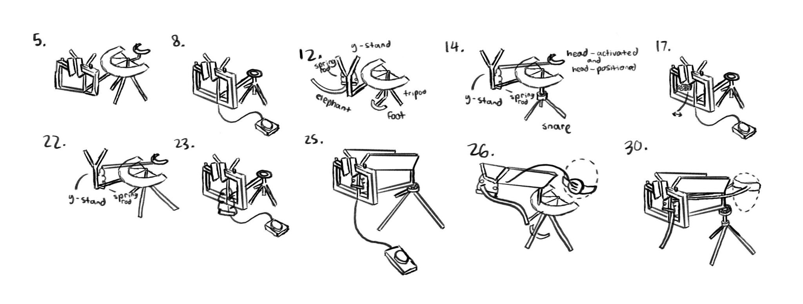
Weighted scores
Top 6 of 10. Weights: ease of use 0.4 · durability 0.3 · cost 0.2 · maintenance 0.1
EDP 6 · Prototype concept
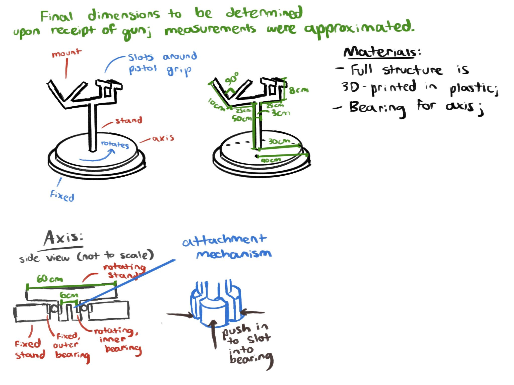
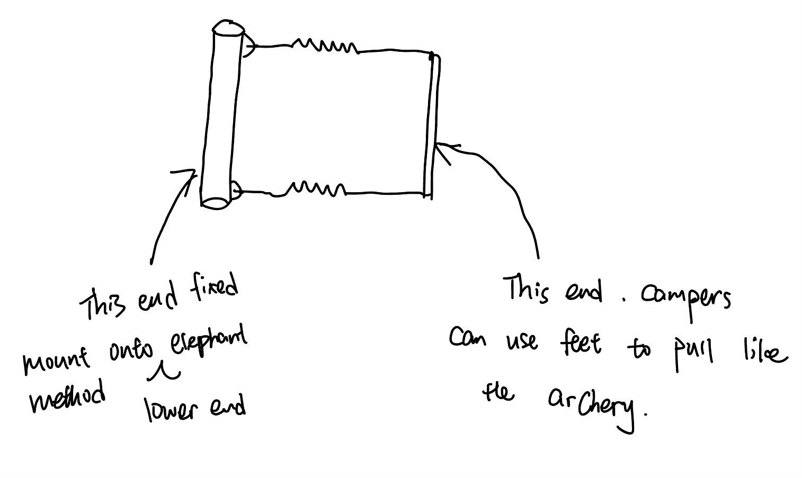
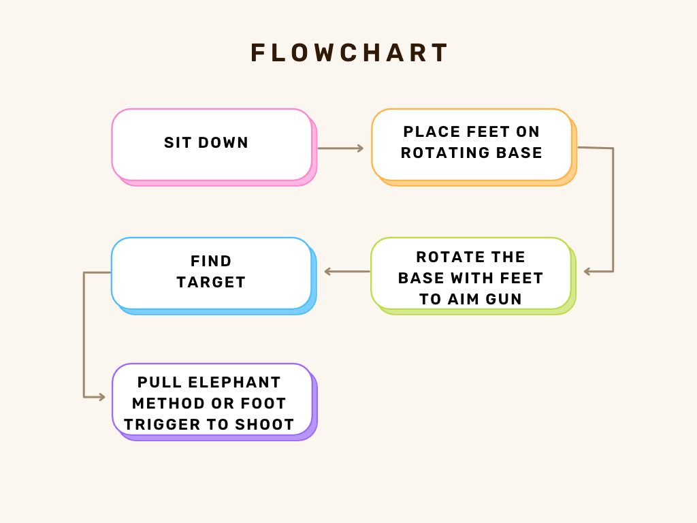
Staff setup
- Secure the elephant-method extension onto the existing trigger.
- Seat the marker in the slots around the pistol grip and Y-stand mount.
- Attach the spring + rod mechanism around the extended trigger.
Camper use
- Sit behind the device and place feet on the rotating foot disk.
- Rotate the base with the feet to aim.
- Fire with the elephant method or the foot button.
Manufacturing and training
The mount, elephant-method extension, and Y-stand are designed in CAD and 3D printed. The base uses OEDK bearings, with wood and metal for the stand and disks. Each part slots into the next, so integration stays simple.
- 3D printing and laser cutterNov 2–6 · required
- Waterjet or plasma cutterNov 9–13 · for metal parts
- CNCNov 9–13 · if tighter tolerances are needed
- Machine shop safetyBefore fabrication
Stage 04 · Early iterations
Prototype Iteration
Two iterations so far: a cardboard proof of concept, then a CAD and 3D-printed v2.
v1 · Lo-fi foot axis, Y-stand, and mount
- Built from
- Cardboard, straws, string, hot glue, tape, small bearings, and dowel rods, at a small scale. Each subsystem was built separately.
- Purpose
- Check the idea and geometry cheaply before CAD. Can the Y-stand hold the marker steady? Can a bearing turn a moving stand on top of a fixed one? Can the mount fit the marker?
- Results
- The Y-stand stands on its own and the axis rotates a full 360°, more than we need. The materials can't hold a real marker, but that is a limit of lo-fi materials, not of the design. The Y-stand and spring + rod trigger worked as expected.
- Lessons
- Add stops to limit rotation to about 120° for safety. Raise the front and back mounts above the middle to cradle the marker. The scaled-down base couldn't be connected to the full-size parts, so integration is untested.
- Next
- Move every component into CAD, with a larger bearing and more durable materials.
v2 · CAD mount, trigger, interface, stand, and axis
- Purpose
- Improve durability and precision, much closer to the device's real function.
- Results
- The axis turns smoothly through 360°. The stand supports the proportional weight of a 3D-printed model marker, and the mount fits snugly around it.
- Feedback
- Dr. Heather Bisesti suggested adding vertical adjustment to better match the paintball experience, and a push trigger so campers with limited strength can fire more easily.
- Next
- Build and test a push-trigger version with adjustable height, and 3D print the elephant method.
Medium-fidelity plan
| Feature | Next iteration | Owner | Time |
|---|---|---|---|
| Rotating base + bearing | Two CAD-designed plates with a press-fit bearing, replacing the lo-fi dowel rod | Lukah | 6–8 hr |
| Scaled marker model | 3D-printed Tippmann model to test fit without a live marker | Jason | 6–8 hr |
| Y-stand support | A realistic Y-stand that holds the model and connects to the base | Reid | 4–6 hr |
| Spring + rod and elephant method | Mid-fi models to check movement and interference, non-firing | Jason | 4–6 hr |
| System integration | Assemble everything, test rotation and stability, revise CAD | Team | 6–8 hr |
Stage 05
Communication
Reviews, feedback, and what changed because of it.
Oral presentation
Parity Aim prototype presentation · 14 min · Jason Fu, Reid Waldon, Lukah Villarreal
Milestones
- Client interviewDone
- Research & criteria reviewDone
- Brainstorm & evaluation reviewDone
- Oral presentationDone
- Final design review & posterUpcoming